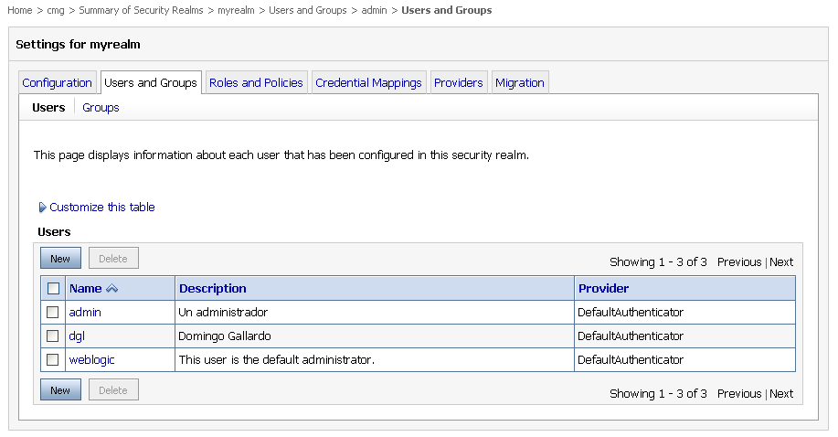
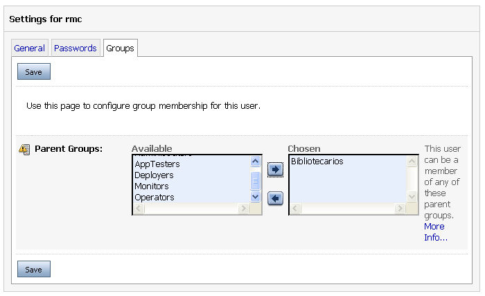
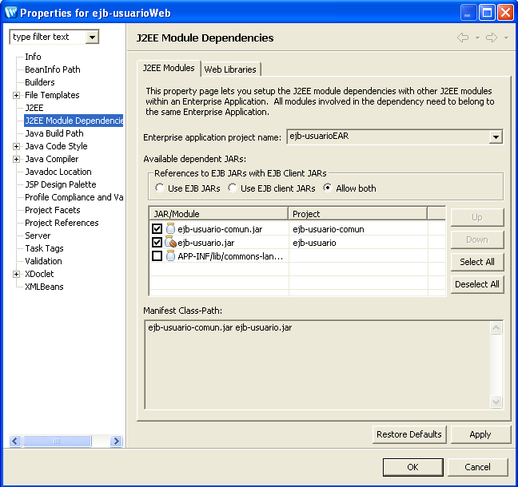

Sesión 6 de ejercicios EJB - Seguridad en EJB
En esta sesión vamos a modificar la aplicación EAR "ejb-usuarioEAR" terminada en la sesión anterior (transacciones) para probar las distintas características de la gestión de seguridad en EJB.
En concreto, los pasos que vamos a seguir en esta sesión de ejercicios son:
- Modificar el código del EJB "UsuarioBean" para añadir una lista de roles permitidos al método addUsuario(String) y para definir los principals asociados a esos roles.
- Probar con un cliente remoto el funcionamiento de los roles: sólo será posible ejecutar el método si el cliente se autentifica como uno de los usuarios asociados a los roles.
- Definir en la consola de administración los usuarios y grupos asociados a los roles definidos en la aplicación.
- Modificar el EJB para probar la gestión programativa de la seguridad.
- Añadir una aplicación Web con una página JSP en la que se compruebe que el acceso al método también está restringido en el caso del acceso local. Autentifcarse en la página JSP y conseguir realizar la llamada al método.
Modificación del EJB UsuarioBean
1. Modifica en el proyecto EJB el método addUsuario(String) de la clase UsuarioBean para incluir la declaración de roles en la anotación @RemoteMethod.
@RemoteMethod(
roles = "admin, bibliotecario")
public void addUsuario(String login) {
try {
UsuarioTO usuarioTO = new UsuarioTO();
usuarioTO.setLogin(login);
usuarioDAO.addUsuario(usuarioTO);
} catch (DAOException e) {
e.printStackTrace();
throw new EJBException();
}
}
2. Añade la anotación @RoleMappings en la declaración de la clase, para definir los principals asociados a los roles: el usuario "admin" asociado al rol "administrador" y los usuarios "dgl", "admin" y el grupo "Bibliotecarios" asociados al rol "bibliotecario".
@RoleMappings(
{@RoleMapping(principals = "admin", roleName = "administrador"),
@RoleMapping(principals = "dgl, admin, Bibliotecarios",
roleName = "bibliotecario")})
public class UsuarioBean extends GenericSessionBean implements SessionBean {
...
3. Despliega el proyecto "ejb-usuarioEAR" en el servidor de aplicaciones (dominio "ejb").
Comprobación de la seguridad
Vamos a probar con un cliente remoto el funcionamiento de los roles: sólo será posible ejecutar el método si el cliente se autentifica como uno de los usuarios asociados a los roles.
Para autentificarse como un usuario en el cliente remoto vamos a usar autentificación mediante JNDI, pasando el login y contraseña al servidor de aplicaciones mediante el InitialContext. Utiliza como login y contraseña inicial el de administración del servidor de aplicaciones. El código del cliente es el siguiente:
package es.ua.jtech.ejb.clientes;
import java.io.BufferedReader;
import java.io.IOException;
import java.io.InputStreamReader;
import java.util.Properties;
import javax.naming.Context;
import javax.naming.InitialContext;
import javax.rmi.PortableRemoteObject;
import es.ua.jtech.ejb.beans.Usuario;
import es.ua.jtech.ejb.beans.UsuarioHome;
public class ClienteSeguridad {
public static void main(String[] args) {
try {
Context jndiContext = getInitialContext();
Object obj = jndiContext.lookup("UsuarioBean");
UsuarioHome home = (UsuarioHome) narrow(
obj, UsuarioHome.class);
obj = home.create();
Usuario usuario = (Usuario) narrow(obj, Usuario.class);
System.out.println("Probando la seguridad...");
System.out.print("Introduce el login de un nuevo usuario "
+ "(no debe existir en la BD): ");
BufferedReader in = new BufferedReader(
new InputStreamReader(System.in));
String login = in.readLine();
usuario.addUsuario(login);
System.out.println("Método llamado con éxito");
} catch (Exception e) {
System.out.println("Excepción \n Mensaje: "
+ e.getMessage());
e.printStackTrace();
}
}
private static Context getInitialContext()
throws javax.naming.NamingException, IOException {
Properties p = new Properties();
p.put(Context.INITIAL_CONTEXT_FACTORY,
"weblogic.jndi.WLInitialContextFactory");
p.put(Context.PROVIDER_URL, "t3://localhost:7001");
p.put(Context.SECURITY_PRINCIPAL, "weblogic");
p.put(Context.SECURITY_CREDENTIALS, "weblogic");
return new InitialContext(p);
}
private static Object narrow(Object obj, Class clase) {
return PortableRemoteObject.narrow(obj, clase);
}
}
1. Crea el cliente en el proyecto cliente (paquete es.ua.jtech.ejb.clientes)
2. Ejecútalo y verás que aparece una excepción de tipo "CORBA NO_PERMISSION", debido a que el usuario "weblogic" no está autorizado a acceder al método.
Creación de los usuarios y grupos en la consola de administración
1. Accede a la consola de administracion del dominio "ejb" y escoge la opción "Security Realms > myrealm".
2. Escoge la pestaña "Users and Groups" y pincha en el botón "New" para añadir nuevos usuarios. Añade, los usuarios "dgl" y "admin" con la contraseña "12345678". Al final debe aparecer una pantalla como la siguiente. La descripción no es relevante, sólo es informativa.

3. Cambia en el código del cliente el nombre del usuario por el de "admin" y la contraseña por "12345678":
p.put(Context.SECURITY_PRINCIPAL, "admin");
p.put(Context.SECURITY_CREDENTIALS, "12345678");
Prueba a ejecutarlo y comprueba que ahora sí fuciona, porque se accede al método del EJB con un principal asociado a un rol autorizado para el método addUsuario.
4. Vamos a probar ahora con algo que proprociona más flexibilidad. En el código del EJB hemos autorizado el acceso al principal "Bibliotecarios", que vamos a definir en el servidor de aplicaciones como un grupo, en lugar de como un usuario. De esta forma estaremos autorizando el acceso al EJB a cualquier usuario que pertenezca a ese grupo.
Este enfoque es más flexible porque nos permite añadir usuarios autorizados utilizando únicamente el servidor de aplicaciones, sin tocar el código ni los descriptores de despliegue del EAR.
Escoge la opción "Groups" en la pestaña "Users and Groups" del security realm "myrealm" (pantalla anterior). Añade un nuevo grupo "Bibliotecarios".
Crea ahora un nuevo usuario "rmc" con la contraseña "12345678". Pincha en el usuario, luego en la pestaña "Groups" y selecciona el grupo "Bibliotecarios":

5. Cambia ahora el usuario en la aplicación cliente y prueba a ejecutarla. Verás que también tienes acceso, ya que el usuario "rmc" pertenece al grupo "Bibliotecarios" y posee ese principal.
Seguridad programativa
1. Añade el siguiente código en el EJB para comprobar seguridad programativa.
public class UsuarioBean extends GenericSessionBean
implements SessionBean {
SessionContext ctx = null;
...
public void setSessionContext(SessionContext ctx) {
this.ctx = ctx;
}
...
public void addUsuario(String login) {
System.out.println(ctx.getCallerPrincipal().getName());
if (ctx.isCallerInRole("administrador")) {
//código ejecutado por administradores
System.out.println("Me llama un administrador");
}
if (ctx.isCallerInRole("bibliotecario")){
//código ejecutado por bibliotecarios
System.out.println("Me llama un bibliotecario");
}
...
}
...
En la primera parte del código declaramos el método de ciclo de vida setSessionContext que es llamado por el contenedor EJB y actualiza la variable de instancia SessionContext ctx. En la segunda parte, modificamos el método addUsuario para que se imprima por la salida estándar (la consola del servidor de aplicaciones) el nombre del principal del llamador y comprobamos si tiene el rol "administrador" y el rol "bibliotecario".
6. Prueba a ejecutar el cliente remoto con distintos usuarios y comprueba lo que aparece por la salida estándar. Si accedes, por ejemplo, con el usuario "admin" debe aparecer que tiene dos roles: "administrador" y "bibliotecario".
Seguridad en las llamadas locales desde aplicaciones web
Vamos a terminar modificando la página "index.jsp" del proyecto web que creamos en la sesión anterior para que se haga una llamada al EJB y se compruebe que también se controla el acceso en las peticiones locales.
1. Añade al método addUsuario()la anotación:
@LocalMethod(roles="administrador, bibliotecario")
Modifica también las anotaciones @JndiName y @FileGeneration para definir el nombre JNDI local y las interfaces local y localhome:
@JndiName(remote = "UsuarioBean",
local = "UsuarioBeanLocal")
@FileGeneration(remoteClass = Constants.Bool.TRUE,
remoteHome = Constants.Bool.TRUE,
localClass = Constants.Bool.TRUE,
localHome = Constants.Bool.TRUE,
remoteClassName = "Usuario",
remoteHomeName = "UsuarioHome",
localClassName = "UsuarioLocal",
localHomeName = "UsuarioLocalHome")
De esta forma es posible llamar al método de forma local desde una página JSP en una aplicación Web desplegada en el mismo EAR.
2. Añade el proyecto "ejb-usuario" en las "J2EE Module Dependencies" del proyecto web ("Botón derecho en el proyecto web > Properties > J2EE Module Dependencies" y pincha en la pestaña "J2EE Modules"). Debe aparecer la siguiente figura:

3. Modifica la página "index.jsp" del proyecto "ejb-usuarioWeb" para que se realice una llamada sin autentificarse al enterprise bean:
<%@ page language="java" contentType="text/html;charset=UTF-8"%>
<html>
<body>
JavaServer Page - ${pageContext.request.requestURI}
<%
javax.naming.Context jndiContext =
new javax.naming.InitialContext();
es.ua.jtech.ejb.beans.UsuarioLocalHome home =
(es.ua.jtech.ejb.beans.UsuarioLocalHome)
jndiContext.lookup("UsuarioBeanLocal");
es.ua.jtech.ejb.beans.UsuarioLocal usuario = home.create();
usuario.addUsuario("pdasdwds");%>
<p>Usuario añadido</p>
</body>
</html>
4. Accede a la página "http://localhost:7001/ejb-usuarioWeb" y verás como se produce un error de tipo javax.ejb.AccessLocalException que indica que el usuario "anonymous" no tiene permisos suficientes para acceder al método del EJB.
5. Modifica el código de la página JSP para realizar la autentificación mediante JNDI:
...
JavaServer Page - ${pageContext.request.requestURI}
<%
weblogic.jndi.Environment env =
new weblogic.jndi.Environment();
env.setSecurityPrincipal("dgl");
env.setSecurityCredentials("12345678");
javax.naming.Context jndiContext = env.getInitialContext()
es.ua.jtech.ejb.beans.UsuarioLocalHome home =
(es.ua.jtech.ejb.beans.UsuarioLocalHome)
jndiContext.lookup("UsuarioBeanLocal");
...
6. Vuelve a acceder a la URL de la aplicación Web y comprueba que ahora sí que se ejecuta el método del EJB.